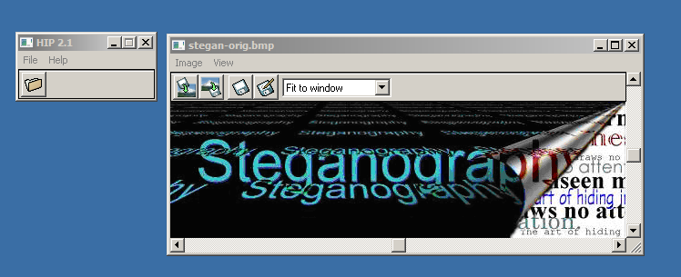
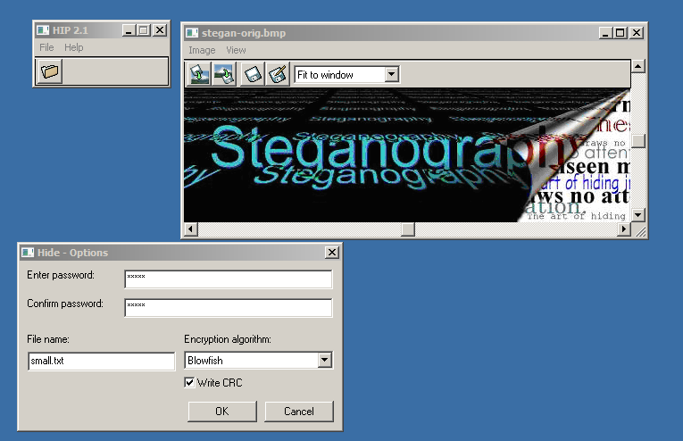

Exercise TwoHiding & Retrieving Data
The main goal of this exercise is to be able to hide and then retrieve data. For this exercise I will be using an open source tool, Hide in Picture which allows you to conceal files in an image.
Firstly I had to download the program from SouceForge and then I installed it on my Virtualbox that is running Windows XP Professional. Next I opened the program up and performed the following tasks:
First I opened the picture that I wanted to conceal my information in. Below is a screenshot of the picture opened in the program.
Next while I had the picture opened, I selected the file that has the information which I want to hide and opened it in Hide in Picture. By doing so the program now prompted me for a password and an encryption algorithm. I used my name as the password (shane) and I chose Blowfish as the encryption algorithm. Below is a screenshot of this.

Finally I clicked OK and then saved the new image file. This file will store the hidden data in it. Both files are identical in both size (225654 bytes) and in image quality so you will be completely unaware that the second image is storing hidden data.
Below are the files; on the left is original image and on the right is the image with the information concealed within it.
Next step of this exercise was to retrieve the hidden data. This is done similarly to hiding data; first off I opened up the Hide in Picture program and then opened the image with the hidden data. Next I told the application to retrieve the file and it prompted me for the password. Once I entered this it allowed me to save the hidden file to a location of my choice so that I could view its contents.
I did the same test as above on a new image, this time it was GIF image. The differences in size between the original GIF image and the GIF image that had the information concealed in it were massive. The original file was 88.6 KB (90696 bytes) and the other was 160.4 KB (164294 bytes) and the reason for this is that the first image was of 24 bit BMP and the information was stored in the least significant bit of each byte of the image resulting in the image looking identical and the amount of change required to hide the information was relatively small. But with the GIF image being 8 bit it required changing roughly 50% of bits for the least significant bit insertion which resulted in the image gaining size. Both images are also identical in image quality.
Below are the two files; the original file on the left and the file concealing the information is on the right.
That was the final task of this exercise.
Reference
All the information used in this website has been sourced from the following locations:
Gary C. Kessler. (2001). Steganography: Hiding Data Within Data .Available: http://www.garykessler.net/library/steganography.html. Last accessed 1-11-2011.
Neil F. Johnson. Steganography. Technical Report. November 1995